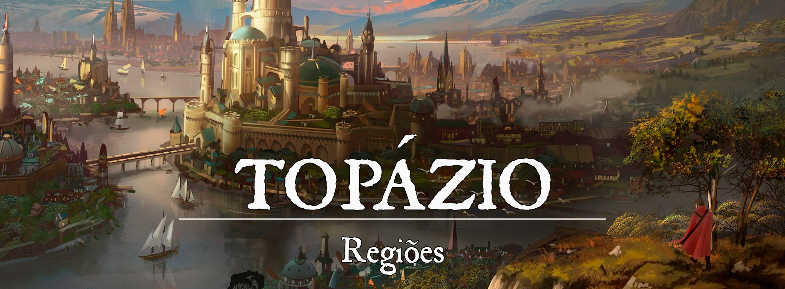

Topázio
Descrição
Topázio é uma das maiores e mais importantes cidades-estados de Gronnemar. O comércio local é fortíssimo e os portos estão sempre movimentados, bem como os bordéis e casas de apostas. Lar de intrigas políticas e conflitos calorosos entre mercadores, assassinos e mercenários que aceitam poucas moedas para matar, e um povo que tenta sobreviver com seu humilde comércio, a “Cidade em Três Partes” é um lugar opressor e violento, com oportunidades únicas para quem souber agarrá-las.
Descrição Visual:
unknown (84).png |Topázio
{kind=link}
A cidade de Topázio foi construída e dividida em três principais regiões, que são: Cidade Livre, As Torres e a Capital.
A Cidade Livre é o lar do povo comum de Topázio. Essa região é quase uma camada para os outros dois bairros de Topázio, que foram construídos em ilhas. A Cidade Livre se estende em terra e em campos de colheita, mas são os portos que ficam abarrotados com marinheiros e mercadores. A maior parte das construções próximas ao porto são antigas e altas, feitas de pedra e ameaçando ruir sobre seu próprio peso.
Separado da Cidade Livre por uma ponte de pedra, As Torres pertencem à nobreza e aos ricos mercadores de Topázio. A região possui uma área limitada e precisou expandir para cima com torres e prédios. As construções são, em sua maioria, também a oficina de nobres artesãos. O som de seu trabalho é constante durante o dia e o cheiro de couro parece estar em todos os lugares.
O distrito da Capital possui conexão com a terra, mas é separado da Cidade Livre. Também é o lar dos nobres e mercadores bem sucedidos de Topázio, e adicionalmente do exército da cidade. As Torres não suportariam toda a nobreza de Topázio por muito tempo, então os nobres mais ricos e importantes da cidade migraram para um novo bairro, conectando-o à terra desta vez. A Capital é uma versão ainda mais extravagante de As Torres, contando com templos, bancos, portos, cassinos e com as maiores e mais importantes oficinas de Topázio. O Grande Palácio é visto de todos os cantos da cidade, uma fortaleza enorme e símbolo da extravagância de Topázio.
Sociedade
População:
A Cidade Livre está sempre abarrotada de todo o tipo de gente e raça. A plebe é muito variada com os visitantes que chegam de todos os cantos do mundo. As Torres e a Capital costumam variar principalmente entre humanos, anões e elfos.
Cultura:
O povo de Topázio tende a ser extravagante, mesmo os pobres. Marinheiros com enormes chapéus de almirante, mercenários com barbas e bigodes pintados com cores vivas e chamativas (como azul, verde ou vermelho) e cavaleiros com armaduras ornamentadas pouco funcionais em uma batalha verdadeira. Os bordéis são uma surpresa para qualquer visitante e cada um é único.
Caráter:
Topázio tende a ser violenta em seus melhores dias, com pequenas guerras civis estourando nos piores. Com a variedade de raças e culturas em Topázio, desentendimentos são quase comuns. A população se vê andando armada ou acompanhada de capangas. Para a maioria, fechar um bom negócio é tão importante quanto se manter vivo para o próximo.
Datas e Festividades:
Religião:
Não existe uma fé oficial em Topázio e nenhuma outra é proibida. Ainda existem leis que proíbem ou limitam a influência de certos cultos na cidade. Voss é uma deusa com certa admiração na cidade devido aos Corvos de Voss (que muitas vezes andam como nobres por Topázio).
Economia
Topázio possui um comércio variado com muitas das cidades costeiras do continente. A confecção de couros e seda é uma especialidade de Topázio e seus artesãos são conhecidos no mundo inteiro. Topázio também explora a Baía de Topázio em busca de pérolas.
Serviços:
Um dos serviços mais valiosos de Topázio, é a confecção de couro. Armaduras de couro são feitas com a melhor qualidade possível em Topázio.
Governo
Topázio é governado pelo Grão-Duque, um título nobiliárquico passado hereditariamente. Antes do Grão-Duque, Topázio foi governado pelos ricos e poderosos, mas isso chegou ao fim após uma rebelião de escravos.
Poderio Militar:
Antigamente, quando Topázio era um dos principais mercados de escravos de Gronnemar, os cavaleiros-escravos foram uma das principais fontes de renda da cidade. Soldados treinados para lutar e morrer desde o seu nascimento, enviados para nações vizinhas apenas para guerrear. Uma rebelião bem sucedida aboliu a escravidão em Topázio, e os cavaleiros-escravos se tornaram os cavaleiros livres. Eles se tornaram uma das principais linhas de defesa de Topázio sob as ordens do Grão-Duque.
Os Corvos de Voss não são exatamente um poderio militar em Topázio, mas desencorajam qualquer tipo de ameaça à cidade. Os Corvos são os assassinos mais letais do continente e aceitam contratos até mesmo pelas cabeças mais valiosas.
Conflito
Topázio é uma cidade violenta devido ao desentendimento constante de muitas culturas e raças. A rivalidade entre mercadores pode tornar-se rapidamente calorosa, estourando pequenas batalhas entre mercenários e foras da lei.
Organizações Relevantes
Corvos de Voss: Topázio é a sede dos Corvos de Voss, uma organização de assassinos especialmente treinados que atuam por todo o continente. Os Corvos de Voss aceitam os contratos mais perigosos do continente, conhecidos no passado até por terem matado reis. O contrato para um corvo, no entanto, é extremamente caro.
Locais Relevantes
NPCs Relevantes
Grão-Duque Aelarion Valheru
9f8dd5bef5a3f67e16126196c308682b.jpg | Aelarion Valheru
{kind=link}
O Grão-Duque de Topázio é um homem inteligente e astuto. Filho mais dos Valheru de Topázio, Aelarion dedicou toda a sua juventude para o momento em que assumiria o manto de Grão-Duque. De mente afiada e com um forte senso de justiça, Aelarion pode ser implacável com aqueles que desafiam sua autoridade.
Aelarion Valheru é um estrategista brilhante, tendo passado anos estudando a arte da guerra e da política com seu pai, o falecido Grão-Duque Aerys Valheru. Ele é capaz de prever os movimentos não apenas de seus inimigos, como também os de seus aliados pouco confiáveis. Aelarion busca evitar lutas desnecessárias, mas se torna um oponente feroz quando precisa desembainhar sua espada.
Aelarion é um homem de grande personalidade, carismático e fácil de se conversar, mas também é muito reservado, guardando seus segredos, planos e sentimentos para si. Alguns o conhecem como o Duque Solitário, pois ele mantém uma relação distante até mesmo com a Grã-Duquesa Alexandrea, sua esposa.
Grã-Duquesa Alexandrea Charlton
tumblr_pn27jrkuCD1rt05vro1_1280.jpg | Alexandrea Charlton
{kind=link}
A Grã-Duquesa Alexandrea vem de uma das famílias de artesãos mais renomados de Topázio, sendo ela própria uma artesã muito talentosa. Assim como seu marido, o Grão-Duque Aelarion, Alexandrea possui um vasto conhecimento da arte da guerra, diferindo dele apenas por preferir colocar suas habilidades em prática. Conhecida como a Duquesa Guerreira, Alexandrea é dedicada à sua espada e a um treinamento constante, sempre vestida em uma armadura de couro lendária costurada por seu avô, Floyd Charlton, que foi um dos artesãos mais brilhantes de Topázio.
Alexandrea tem um relacionamento distante com seu marido, Aelarion. Eles não se amam de verdade, mas Alexandrea não se importa de fato com isso, e sempre colabora com as decisões políticas em Topázio para ajudar seu marido. Juntos, eles possuem três filhos pequenos (duas meninas e um menino): Meline, Emily e Eleasar. Meline tem quatro anos de idade, Emily dois anos de idade, e Eleasar apenas alguns meses de vida.
Keth
main-qimg-5eaef0c3dda3100082dbdf6fee28dfa7-lq.jpg | Keth
{kind=link}
O líder dos Corvos de Voss em Topázio é um kenku chamado Keth, um indivíduo tão misterioso e sombrio quanto a organização que comanda. Reconhecido por sua habilidade lendária como assassino e sua capacidade de planejar e executar os planos mais complexos, Keth aceita apenas os contratos mais perigosos, difíceis e caros. Alguns membros dos Corvos de Voss o chamam de "Matador de Reis", apesar de ninguém saber exatamente se Keth matou um rei ou qual rei ele teria matado.
Keth normalmente veste um manto verde puído e suas penas quase sempre estão à mostra, mas sua presença em uma sala sempre passa despercebida. A maioria considera essa "invisibilidade passiva" de Keth muito útil, sendo percebido apenas quando é tarde demais.
Origem
A origem de Topázio data desde a queda do Império de Elselenor, quando piratas e mercenários se reuniram para formar uma aliança. As terras élficas estavam à mercê de povos gananciosos em guerra, criando a oportunidade perfeita para mercenários e mercadores lucrarem. A Aliança de Topázio tinha como único objetivo lucrar, seja vendendo armas e suprimentos ou enviando soldados para as novas nações em guerra, mas sem se envolver diretamente com o conflito.
Os melhores artesãos de Topázio desenvolveram sua técnica ao longo de todo esse período, posteriormente fundando as primeiras famílias nobres da cidade. A Aliança de Topázio trazia riquezas aos comandantes mercenários e piratas, bem como renome aos seus artesãos. Os mais talentosos enriqueceram, enquanto os mais aptos à guerra foram enviados para nações vizinhas para morrer em nome de um rei que não conheciam. Posteriormente, os comandantes que eram enviados às guerras para morrer com seus soldados decidiram dar um basta, exigindo as riquezas prometidas pela Aliança de Topázio. Uma guerra civil esteve próxima de estourar entre os senhores de Topázio, mas um outro acordo foi assinado. Ao invés de mandar seus próprios homens para morrer, os senhores de Topázio decidiram entrar no mercado escravo e criar soldados-escravos para lutar em seus lugares. Esses soldados ficaram conhecidos como cavaleiros-escravos e sua força foi temida por muitos anos.
O novo acordo se mostrou promissor e logo Topázio se tornou um dos principais mercados de escravos de Gronnemar. A cidade de Topázio foi fundada e os ricos passaram a governá-la. Os comandantes se tornaram senhores de suas próprias famílias e seus descendentes continuaram o trabalho que seus parentes tinham começado. Topázio se tornou ainda mais poderoso e passou a se envolver diretamente nos conflitos de Gronnemar. Alianças eram forjadas e quebradas, rebeliões eram contidas a todo instante, e a guerra tinha se tornado demasiadamente lucrativa.
Antes do começo da primeira era, Topázio já era uma das nações mais consolidadas do mundo. O mercado de escravos crescera exponencialmente, os artesãos topazianos eram conhecidos no mundo inteiro e alianças fortíssimas foram forjadas. Topázio foi parte da União de Três, a união de três cidades poderosas de Gronnemar e que basicamente controlavam o mercado de escravos da época. Mais e mais escravos eram trazidos da guerra ou de saques de nações distantes. Esse mercado permaneceu com força total até a chegada de Ascalon sobre a União de Três com sua Marcha Áurea.
As duas outras cidades lutaram com afinco contra Ascalon, mas foram derrotadas perante a Marcha Áurea. Ascalon avançava com uma força surreal e recebia apoio das muitas cidades que sofreram com a ganância da União de Três. Quando Ascalon finalmente alcançou Topázio (a mais distante das três cidades), não houve batalha para lutar, pois uma rebelião liderada pelos lendários cavaleiros-escravos colocou um fim à opressão de seus captores.
A Cidade da Lama (principal bairro dos escravos) foi renomeada para Cidade Livre. Os cavaleiros-escravos se tornaram heróis ou nobres justos, e Topázio se viu livre da escravidão.